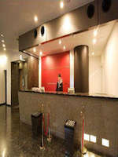
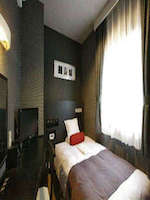
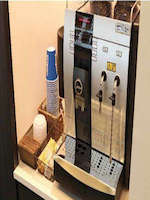
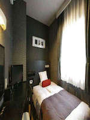
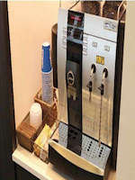

ตั้งอยู่เดินเพียง 2 นาทีจากทางออกทางตะวันตกของสถานีชินจูกุสะดวก [15 กันยายน 2011 พิธีเปิดงาน] เดินเพียง 2 นาทีจากเตย Oedo สาย "ชินจูกุ Nishiguchi" สถานี! จูเนียร์ "ชินจูกุ" สถานีที่ตั้งอยู่ในทำเลที่สะดวกเดิน 5 นาทีจากทางออกเวสต์ ผมติดตามสถานที่และสามารถเข้าถึงได้ง่ายทั้งสององค์ประกอบของความสะดวกสบายความสะดวกสบายที่สมบูรณ์กับธุรกิจหน่วยความจำเสื่อโฟม, ช้อปปิ้งและอื่น ๆ
 


